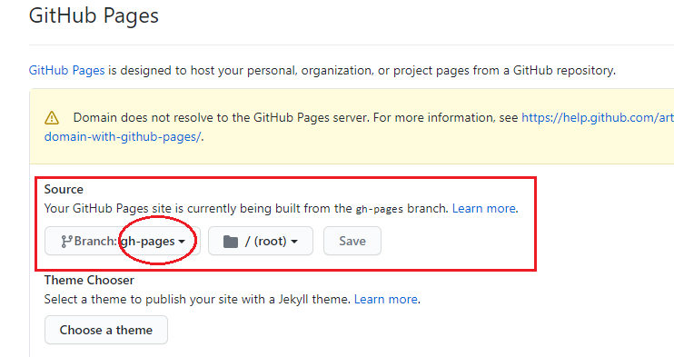
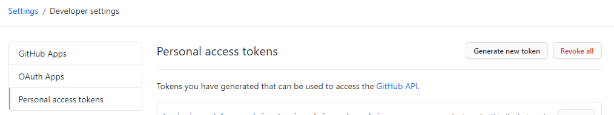
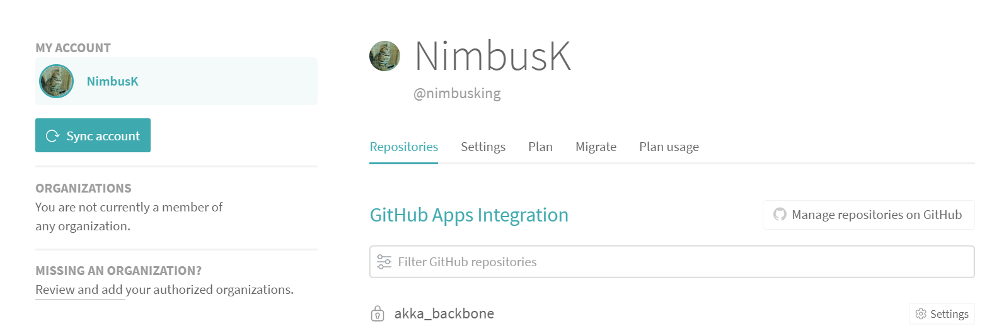
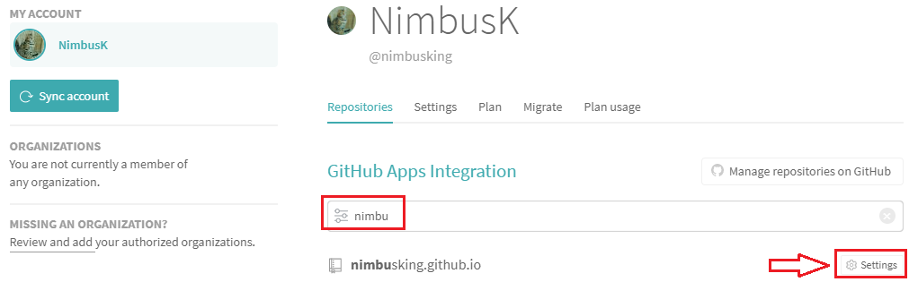
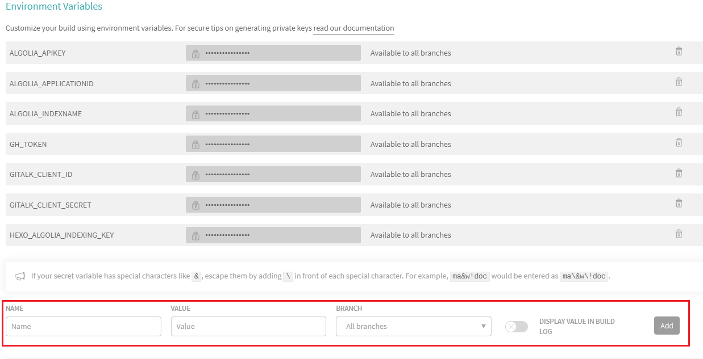

Hexo与TravisCI持续集成
更新
由于TravisCI不论公有开始私有仓库开启收费模式了，故而我选择放弃。
本博客相关全部交付GitHub Actions自行托管编译了，相关教程请站内搜索GitHub Actions即可
背景
Hexo个人博客满打满算也算是建站有2~3年了，原先自己的写作的方式是：
- 有多平台协作的软件：例如为知笔记、iOS自带的备忘录、OneNote等等，这些多平台协作的软件，供自己日常写稿子所需。
- 一个平台编译发布：家中的Windows台式机
- 整个Hexo工程目录丢在OneDrive中同步
这样的模式，存在几个问题：
- 协作协作并不方便，其实根本没有做到随时随地编写发布到博客网站的可能
- 一个平台编译：多平台编译其实可以，但是存在问题的是，也是之前碰到过的一种情况。
我在自己办公windows的备机上也搭建了Hexo环境，也能编译。也登录了同步OneDrive账号，同步了Hexo工程目录。也能编译，也能发布。但是由于某天，不知道什么鬼原因，两台电脑同步出了问题，导致OneDrive自己给所有文件通通重命名了，所有文件名称中加入了计算机名称，这个让我抓狂的。
后来就是全部删了，重新hexo init，重新搞了一遍。 - 跨平台可能未必行：在windows编译的，跑到Mac或者Linux环境下编译，能不能搞定，这个还没试过。不过也能可想而知，会出奇怪的问题。
为啥我选择了TravisCI
也正是因为上述主要的三个问题，导致了，必须得更新同步方式。原先想，自己在家中的服务器上，搭建编译环境，也不是不可以，说白了也就是写一个Shell脚本嘛。不过后来放弃了，最主要的一个问题是：文章怎么同步？ 我换电脑，写的东西怎么同步到环境里？更别说，如果要用手机呢？
后来，在百度和Google找来找去，发现很多提到的一个持续集成的工具TravisCI。
在英文版的Hexo官网中，提到了很多现在一键部署的方式，有兴趣可以点击下方传送门：
https://hexo.io/docs/one-command-deployment
前言
- 文中并没有提及相关git操作的命令，如果你还不是很熟悉，请请自行查找相关知识
- 本文是针对已经对hexo使用相对熟悉的哈，如果你还未从未接触过hexo，请先了解一下hexo。
- 如果未来你发现按照我的方法集成有问题，不排除可能有语法更新了，组件更新了。如果你有疑问，可以在评论区留言，或者通过Email联系我，我第一时间有空的话，会帮你解答疑问。
前置须知
关于TravisCI
一句话解释Travis CI干嘛的，说白了就是一个在线编译环境，如果你玩过Jekins，这玩意儿就很好懂了。具体细节，真的建议，看官方文档就好。
https://docs.travis-ci.com/
挑一个你了解的开发语言，如Java、Python什么的，去看看示例就好了。
灵性的大胡子，哈哈哈哈
关于我的站点结构
- 文章托管自然是GitHub，仓库的名字就是：nimbusking.github.io。PS：别折腾自定义的仓库名字了，你要是改了，后面又要折腾不少配置，尤其是绑定了自定义域名的。
- 绑定了一个自己的主站域名，就是你所见到的。
- 主站开启了HTTPS，没自己折腾Nginx，于是我交给了Netlify托管，Netlify证书是通过Let’s Encrypt自签的。严格意义上说，现在我的文章都是部署在Netlify的.
- 域名DNS解析绑到了DNSPOD
- 无CDN（未来也不会加，理由不解释）
- Hexo主题用的是NexT，版本8.2.1，新版本仓库已经迁移了，集成到npm了，而且主要使用了Numjucks
以上就是主要的一些情况的补充说明 - Hexo版本默认用的是最新的版本（直接由npm安装了）
- NodeJS由于沿用自己最初在Windows平台编译的版本，使用的12。
关于Hexo与TravisCI集成
折腾了，差不多1天吧，才搞通了。中间在一个问题上纠结了很久，把遇到的主要情况，先行说明一下。
网上百度和Google中搜了很多，很多都试了，都是不行，无法编译通过。主要编译不通过的，放在下文的插曲中有相关说明。后来不经意在，Hexo韩文官网下藏了一篇关于TravisCI集成的文章（很奇怪，为毛英文主站没有？还好Google收录了，让我搜到了）。
文章地址：https://hexo.io/ko/docs/github-pages.html
怕日后没了，我离线了，在附件小结中可以查看。
其实最主要的问题就一个：让TravisCI拉取的仓库中放哪些文件？这点很多别人的文章中，并没有明确说明，其中也不乏有误导性的文章，导致我自己也是绕了好大一个弯。
这点在官网的文章里，其实有详细说明的：
Push the files of your Hexo folder to the repository. The public/ folder is not (and should not be) uploaded by default, make sure the .gitignore file contains public/ line. The folder structure should be roughly similar to this repo, without the .gitmodules file
注意
就是：除了public以及git相关的文件之外，全部push到仓库里。
你可以参考我的站点的master文章源文件目录结构：https://github.com/nimbusking/nimbusking.github.io/tree/master
插曲
有的文章中提到，只需要传.travis.yml,.config.yml,source，这三个就行了，我真心不知道那些文章中的作者提到的，是怎么hexo generate过的
我也是在这上面绕了很久，也真的这么做了，结果发现，插件什么都装了，结果到执行hexo generate的时候，死活就会报下面类似的问题：
1 | Commands: |
这个类似的提示，hexo没有给出具体的错误，但是结果就是呢，根本就不会生成编译后的public文件夹。后来，我自己在我本地windows上，就copy上面提到的仨文件，一模一样的遇到的提示。至此，说明这个是错误的。
PS：后来，我在_travis.yml，中自己建了一个临时文件夹，完了写shell命令，先hexo init一个临时目录，完了手工copy source目录以及与hexo相关的配置文件。最后，我确实搞定了，可以自动编译通过，但是问题就是，每次都是全新生成的。
插曲就先说到这里，具体正确的步骤，我会在下面那个集成步骤中详细说明。
准备工作
一个空的名为[username].github.io的仓库，其中username是你自己定义的名字
- 上面这个仓库中，有俩分支：一个默认的master分支，一个gh-pages(你可以起别的名字，但是建议就用这个好了，官网也是这个)。
- 自定义名称可以，但是一定要记住：master分支存放博客源文件，gh-pages存放最终hexo generate生成的public文件夹下的内容
- 你的这个仓库的GitHub Pages指定的分支要选择为：gh-pages，如下图所示：

绑定TravisCI在线账号：现在的官网是：https://travis-ci.com/
集成步骤
git clone你的那个空[username].github.io项目到本地的某个目录下
初始化一个空项目
没啥说的，cd到目录下，hexo init
拷贝源文件
主要涉及到你之前的hexo工程中的配置文件，像我主要有两个：
.config.yml.config.next.yml(next主题的配置文件)
剩下就是你的source目录下所有东西
修改配置文件中的敏感信息
主要是如果你使用了一些第三方插件，可能会有一些访问的API Token之类的东西，这部分可不能直接上传到github上，否则不久你懂的。
将这些敏感信息用一个变量名称代替，这些变量怎么用，后面会提到。比如，我在我的hexo里面使用了algolia搜索，那么在我的_config.yml配置文件中，则改为如下样子：
1 | # algolia_applicationID就是一个占位符，其它类似 |
上传源文件到master分支
git push就是了，没什么好说的。
生成GitHub Token
这个token是为了在外部授权可以提交代码所用。
设置路径，访问你的GitHub主页，路径：Settings(点击你的头像右边的下拉箭头) -> Developer Settings -> Personal access tokens -> Generate New Token，如下图所示：

注意这个token要及时复制到文本编辑器里面，下次再进来之后，就看不到了。
配置TravisCI账号
用github授权登录之后，第一次登录travisci官网后，会让你同步仓库。你可能跟我这个不一样，第一次登录会让你去你的github中配置相关的授权信息，照着步骤操作即可。

在搜索框中键入你的仓库名称，随后点击Settings

在Settings页面中，只需要注意添加相应的变量即可。如下图所示：

我自己在这里添加了7个，其中一个GH_TOKEN就是上面在GitHub通过Generate New Token操作生成的。其余的，一个是GiTalk相关的，一个是algolia相关的。通常，其余配置保证默认即可，如果有特殊配置需求，可以阅读Travis相关的配置说明，如Cron Jobs等。
至此，关联上你的GitHub仓库之后，就等于加了一个钩子程序，但是在正式启用前，还缺一个重要的配置文件：.travis.yml ，只有配置了这个文件，才能会被Travis CI识别。
配置.travis.yml文件
这个步骤是集成TravisCI的核心，注意修改。
按照Hexo官网的说明，官网的配置如下：
PS：官网默认没有给每项配置作说明，我这里直接在下面配置文件中加上注释了
1 | sudo: false |
自己在配置的时候，发现，就这个完全已经可以成功部署了。
注意 如果你使用的是TraivsCI自身自带的deploy命令，而且你的项目工程中，原先通过“hexo-deployer-git”插件来deploy的，那么你的hexo工程的配置文件：.config.yml中还需修改：
1 | deploy: |
一点不一样的修改
先贴上我的.travis.yml配置：
1 | language: node_js |
我这里比官网默认配置多了几个东西：
- 设置了nodejs下的node_modules缓存目录，提高编译速度
- 通过install前置步骤安装了一些必要的hexo插件
- 在执行hexo generate命令之前，通过before_script进行了相关必要替换：在这个里面就通过linux sed命令通过取到在travisci后台配置的变量替换到配置文件中。
- 最后一段git clone，是我自己在配置置顶插件之后，自己有修改相关置顶的样式。为了生效，我需要将next主题中的相关配置给替换成我自己的配置。
- 在执行了hexo generate之后，我又执行了一下hexo algolia，更新algolia索引
- 最后就是deploy，$GH_TOKEN就是从TravisCI后台获取的配置的Token值
- 如果你同样使用了 netlify托管，别忘了修改其部署的分支（如果通过现在的仓库部署方式的话）为gh-pages
异常情况
遇到Could not authorize build request错误
今天（2021-06-18）发现死活构建不了，在自己mac上push到github上，死活就没看到travis出现自动构建。又尝试手工构建了一下，结果发现怎么都失败了。提示了一个标题中遇到的错误。
起初还以为自己配置哪里有问题，到github的授权页面，发现token规则好像更新了，可以更新一下。于是乎又更新了一把，结果发现还是没用。
后来百度一下，在官网中找到了：
“Could not authorize build request”, usually means that the account’s subscription expired or that it ran out of trial builds.
到你的账户设置下，plan一栏下，看看订阅。
如果没有显示，需要你选择的话，那就选择免费的，免费计划，有10000点，个人用户，能构建很久了。
结语
至此，Hexo与TravisCI集成的步骤基本介绍完毕。目前基本完美的解决了编译平台的事情。之后就是，换了一个环境，只需要git clone分支就好了。不过有一个小小的遗憾，因为我用了短链，所以，如果我新建了一个主题文章，那么默认是不会生成短链的，只有在hexo g之后才会生成。所以。。。
至此不过还有个疑问，还没搞定。为什么原来只放那三文件，hexo编译不通过呢？相比现在，上传的源文件中多了如下几个：
- _config.landscape.yml
- package-lock.json
- package.json
就可以了？我在我的travis.yml脚本中，并没有安装通过npm安装hexo啊，但是照样执行成功了，这是怎么做到的呢？回头可能还得去了解了解NodeJS下底层工作机制了。
未完待续。。。